Citrix Application Delivery Management (ADM) 12.1
Navigation
The older 12.0 version of NetScaler MAS is detailed in a different post.
- Change Log
- Planning
- Import Appliance into vSphere
- Deployment Modes
- Add Instances
- Virtual Server Licensing
- Enable AppFlow / Insight / Analytics
- Enable Syslog on Instances
- nsroot and nsrecover Password
- Management Certificate
- System Configuration
- Email Notification Server
- Authentication
- Analytics (Insight) Thresholds and Alerts
- Email Alerts (SNMP Traps)
- Director Integration
- Use Citrix ADM - HDX Insight, Gateway Insight, Security Insight
- Troubleshooting
- Upgrade Citrix ADM
:idea: = Recently Updated
Change Log
- 2019 May 3 - Instance Management - added link to Citrix Application Delivery Management PowerShell Module by Kenny Baldwin
- 2019 Apr 26 - Upgrade ADM - Updated screenshots for ADM 12.1 build 50.43
- 2019 Mar 31 - Upgrade ADM - Updated screenshots for ADM 12.1 build 50.39
- 2019 Mar 24 - Upgrade ADM Agent - updated for build 50.33, which resolves a security vulnerability
- 2019 Jan 18 - Upgrade ADM - Updated screenshots for ADM 12.1 build 50.30
- 2019 Jan 7 - Use Citrix ADM - added Infrastructure Analytics from cloud version of ADM.
- 2018 Dec 7 - HDX Insight - added link to CTX239748 HDX Insight Quality Improvements
- 2018 Dec 5 - Message of the Day - new feature in 12.1 build 50
- 2018 Dec 5 - renamed MAS to ADM, renamed NetScaler to ADC
- 2018 Dec 4 - Upgrade - Updated screenshots for ADM 12.1 build 50.28
- 2018 Nov 10 - added latency maximums for HA pair, DR node, and instances
- 2018 Oct 28 - Upgrade - Updated screenshots for MAS 12.1 build 49.37
- 2018 Oct 7 - HDX Insight Requirements - EDT AppFlow requires Citrix ADC 12.1 build 49 or newer
- 2018 Oct 6 - Upgrade - added upgrade instructions for DR node and MAS Agents
- Email Notification Server - added Test button from 12.1 build 49
- Email Alerts - added Prefix severity, category, and failure object information to the custom email subject
- Add Instance - assign tags to instances
- 2018 Oct 2 - Planning - added AppFlow NSAP info from Citrix Blog Post HDX Insight 2.0
- 2018 Aug 1 - Enable Analytics - verify that ULFD is enabled on ADC instance
- 2018 June 23 - Upgrade MAS - Upgrade to MAS 12.0 build 57.24 before you can upgrade to MAS 12.1. (Source = Before you upgrade at Citrix Docs)
- 2018 June 10 - MAS Appliance Maintenance - added link to Recover inaccessible NetScaler MAS servers at Citrix Docs
- 2018 May 28 - updated install/deploy for HA, DR, and remote agents
Planning
Why ADM?
Citrix Application Delivery Management (ADM), formerly known as NetScaler Management and Analytics System (MAS), enables every Citrix ADC (formerly known as NetScaler) administrator to achieve the following:
- Alert notifications - Receive email alerts whenever something goes down. For example, if a Load Balancing service goes down, you can receive an email alert.
- ADM can email you for any Major SNMP trap produced by any ADC appliance.
- Automatically backup all Citrix ADC instances.
- ADM can even transfer the backups to an external system, which is then backed up by a normal backup tool.
- SSL Certificate Expiration - Alert you when SSL certificates are about to expire.
- Show you all SSL certificates across all ADC appliances.
- Configuration Record and Play - Use the Configuration Recorder to configure one ADC appliance, and then push out the same configuration changes to additional appliances. This is the easiest method of managing ADC appliances in multiple datacenters.
- AppFlow Reporting - Receive ICA AppFlow traffic from ADC and show it in graphs.
- Integrate ADM with Citrix Director so Help Desk can see the AppFlow data.
Everything listed above is completely free, so there's no reason not to deploy ADM.
ADM Overview
For an overview of ADM, see Citrix's YouTube video Citrix NetScaler MAS: Application visibility and control in the cloud.
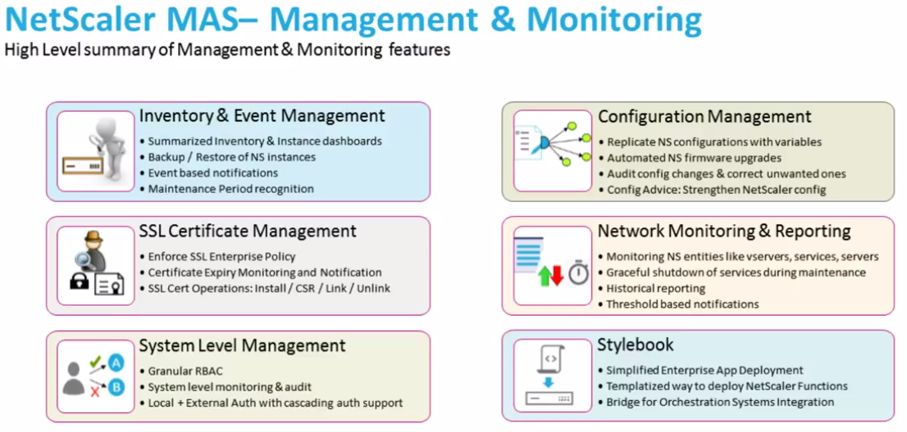
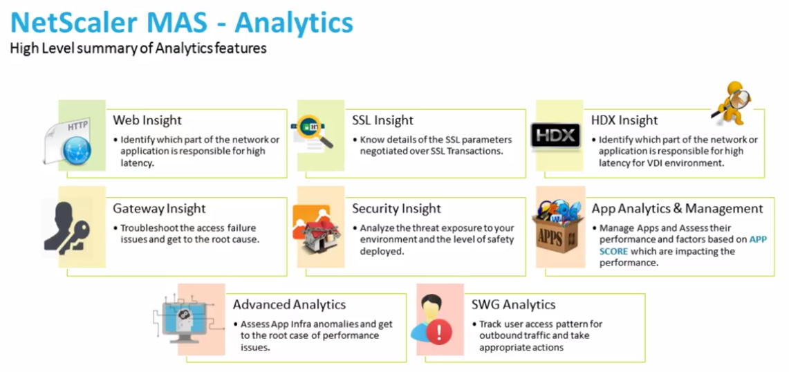
Cloud vs on-prem
ADM is available both on-premises, and as a Cloud Service. For the Cloud Service, you import a ADM Agent appliance to an on-prem hypervisor, or deploy a ADM Agent to AWS or Azure. The ADM Agent is the broker between the Cloud Service and the on-prem (or cloud hosted) Citrix ADC appliances. For more info on the ADM Cloud Service, see the following:
- Demo: Citrix NetScaler Management and Analytics Service - YouTube video
- Most ADM features are supported in the Cloud Service, but some are missing.
- The Cloud Service uses subscription licensing.
- Citrix Application Delivery Management at Citrix Docs
- George Spiers NetScaler Management and Analytics Service
The rest of this article focuses on the on-premises version, but much of it also applies to the Cloud Service.
On-premises ADM Licensing:
- Instance management is free (unlimited). This includes Configuration Jobs, Instance Backups, Network Functions/Reporting. Basically everything in the Networks node is free.
- Analytics and Application monitoring are free for up to 30 Virtual Servers (Load Balancing, Citrix Gateway, Content Switching, etc.).
- Beyond 30 Virtual Servers, licenses can be purchased in 100 Virtual Server packs. See Citrix Application Delivery Management (ADM) Licensing at Citrix Docs.
- You can control assignment of licenses to Virtual Servers.
ADM version - The version/build of Citrix ADM must be the same or newer than the version/build of the Citrix ADC appliances being monitored. ADM 12.1 can monitor 12.0 and older ADC appliances.
HDX Insight
See CTX239748 for a list of HDX Insight Quality Improvements in Citrix Gateway 12.1. These include:
- NSAP protocol for reduced performance impact on ADC
- EDT support
HDX Insight Requirements (aka AppFlow Analytics for Citrix ICA traffic):
- Your ADC appliance must be running Enterprise Edition or Platinum Edition.
- ADC must be 10.1 or newer.
- HDX Insight works with the following Receivers:
- Receiver for Windows must be 3.4 or newer. Or upgrade to Workspace app.
- Receiver for Mac must be 11.8 or newer. Or upgrade to Workspace app.
- Receiver for Linux must be 13 or newer. Or upgrade to Workspace app.
- Notice no mobile Receivers. See the Citrix Receiver Feature Matrix for the latest details.
- For ICA Session Reliability with AppFlow: NetScaler 10.5 build 54 and newer.
- For ICA Session Reliability, AppFlow, and ADC High Availability: NetScaler 11.1 build 49 and newer.
- For EDT (UDT-based ICA), Citrix ADC must be 12.1 build 49 or newer.
- AppFlow statistics are only generated when ICA traffic flows through a Citrix Gateway. Internally, when a user clicks an icon from StoreFront, an ICA connection is established directly from Receiver to the VDA, thus bypassing the internal ADC. Here are some methods of getting ICA traffic to flow through an internal ADC:
- Implement Citrix Gateway ICA Proxy (SSL) internally.
- However, Single Sign-on (pass-through authentication) has special considerations for Citrix Gateway:
- In the newest Workspace app, you can set the client-side GPO setting to enable Single Sign-on through Gateway.
- Or, use SSL ICA Proxy without authenticating at NetScaler Gateway, see CTX200129 - How to Force Connections through NetScaler Gateway Using Optimal Gateways Feature of StoreFront.
- However, Single Sign-on (pass-through authentication) has special considerations for Citrix Gateway:
- Route ICA traffic (TCP/UDP 1494 and TCP/UDP 2598) through a ADC SNIP, and ADC routes it to the VDAs.
- Citrix Blog Post - How to Deploy NetScaler Insight Center with Policy Based Routing
- ADC 11 and newer can proxy ICA traffic through a SOCKS protocol Cache Redirection vServer.
- Advantages: no need to authenticate at Citrix Gateway, and no routing changes. See Citrix Blog Post Gathering HDX Insight Analytics for LAN Users with NetScaler Using SOCKS for more information.
- Citrix Docs How NetScaler Insight Center is Deployed in a Network and Enabling HDX Insight Data Collection detail additional ICA routing/proxy considerations – Transparent Mode, Citrix Gateway Single-Hop and Double-Hop, LAN User Mode (ADC as SOCKS Proxy), CloudBridge, Multi-Hop (ADC and CloudBridge with connection chaining)
- Implement Citrix Gateway ICA Proxy (SSL) internally.
- A new Receiver / Workspace app Virtual Channel named NetScaler App Experience or NSAP can dramatically reduce the CPU needed on the ADC to process AppFlow. Details at Citrix Blog Post HDX Insight 2.0. NSAP requires the following:
- VDA 7.17 or newer, including VDA 1903. VDA 7.15 (LTSR) does not include the NSAP functionality.
- Workspace app or Receiver 4.10 and newer.
- ADC 12.0 build 57.24 or newer, including ADC 12.1.
- For ICA round trip time calculations, in a Citrix Policy, enable the following settings:
- ICA > End User Monitoring > ICA Round Trip Calculation
- ICA > End User Monitoring > ICA Round Trip Calculation Interval
- ICA > End User Monitoring > ICA Round Trip Calculation for Idle Connections
- Citrix CTX215130 HDX Insight Diagnostics and Troubleshooting Guide contains the following contents:
- Introduction
- Prerequisites for Configuring HDX Insight
- Troubleshooting
- Issues Related to ICA parsing
- Error Counter details
- Checklist before Contacting Citrix Technical Support
- Information to collect before Contacting Citrix Technical support
- Known Issues
Citrix CTX204274 How ICA RTT is calculated on NetScaler Insight: ICA RTT constitutes the actual application delay. ICA_RTT = 1 + 2 + 3 + 4 +5 +6:
- Client OS introduced delay
- Client to NS introduced network delay (Wan Latency)
- NS introduced delay in processing client to NS traffic (Client Side Device Latency)
- NS introduced delay in processing NS to Server (XA/XD) traffic (Server Side Device Latency)
- NS to Server network delay (DC Latency)
- Server (XA/XD) OS introduced delay (Host Delay)
Multi-Datacenter Deployment Architecture
In a main datacenter, import two Citrix ADM appliances into the same subnet and configure them as an HA pair with a Floating IP address.
- Documentation at Configure high availability deployment at Citrix Docs, and will be detailed later in this post.
In a DR datacenter, import a Citrix ADM appliance, and configure it to replicate with the main datacenter.
- Documentation at Configure disaster recovery for high availability at Citrix Docs, and will be detailed later in this post.
For Citrix ADC appliances in additional datacenters, import two ADM Agent appliances into each datacenter, and configure them as remote agents to the main datacenter. Two ADM Agents per datacenter enables HA. The virtual appliance for ADM Agent is different than the normal ADM appliance.
- Documentation at Configure multisite deployment at Citrix Docs, and will be detailed later in this post.
Import ADM Appliance
If you are upgrading an existing MAS, skip to the Upgrade section.
To import a ADM Appliance into vSphere, do the following. The same process is used for DR ADM appliance. The ADM Agent appliance is different from the normal ADM appliances that are detailed in this section.
- Go to the ADM 12.1 download page. Expand NetScaler MAS Release 12.1. Expand Product Software. Click the latest release of 12.1.
- Download the Citrix ADM image for ESX.
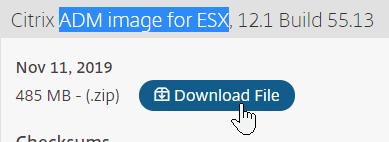
- Then extract the .zip file.
- In vSphere Web Client, right-click a cluster, and click Deploy OVF Template.
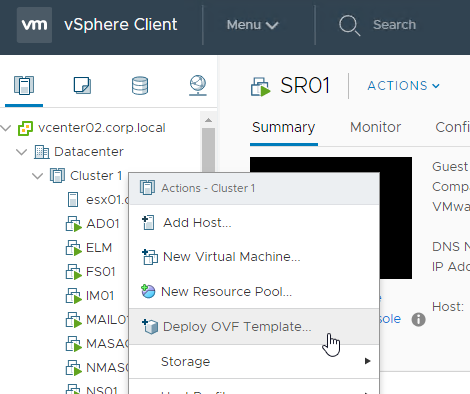
- In the Select an OVF Template page, select Local file, and browse to the Citrix ADM .ovf files. If vCenter 6.5+, select all three files. Click Next.
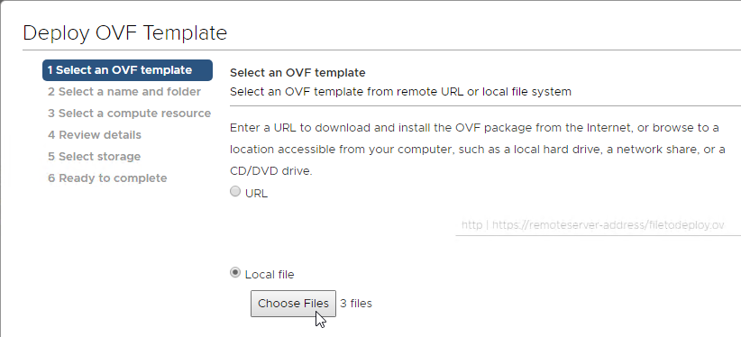
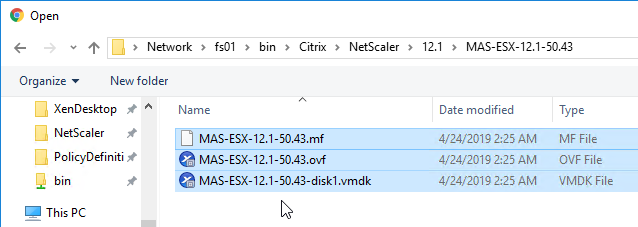
- In the Select name and folder page, enter a name for the virtual machine, and select an inventory folder. Then click Next.
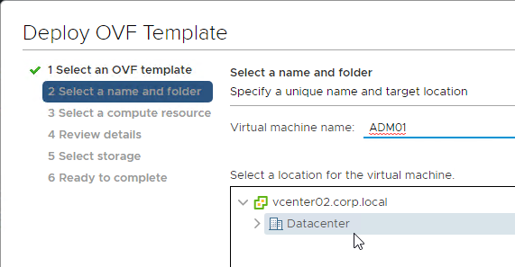
- In the Select a resource page, select a cluster or resource pool, and click Next.
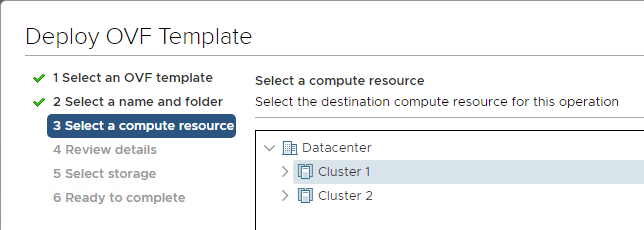
- In the Review details page, click Next.
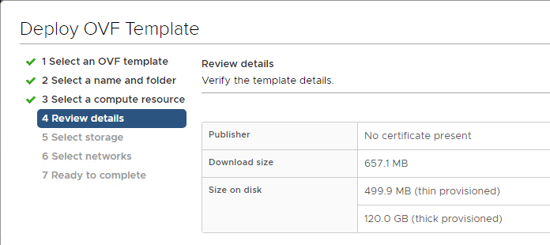
- In the Select storage page, select a datastore. Due to high IOPS requirement, SSD or Flash is recommended.
- Change the virtual disk format to Thin Provision. Click Next.
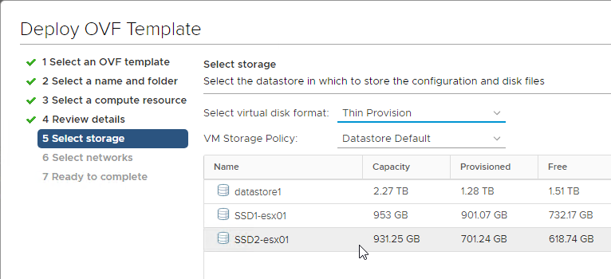
- In the Select networks page, choose a valid port group, and click Finish.
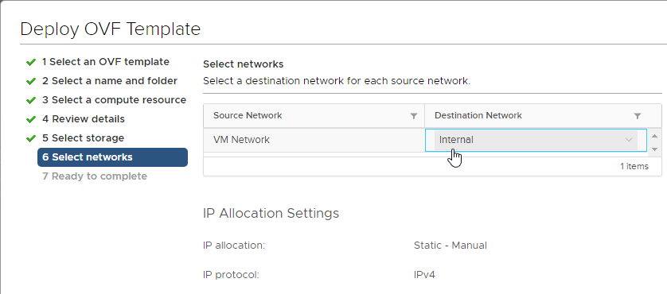
- In the Ready to Complete page, click Finish.
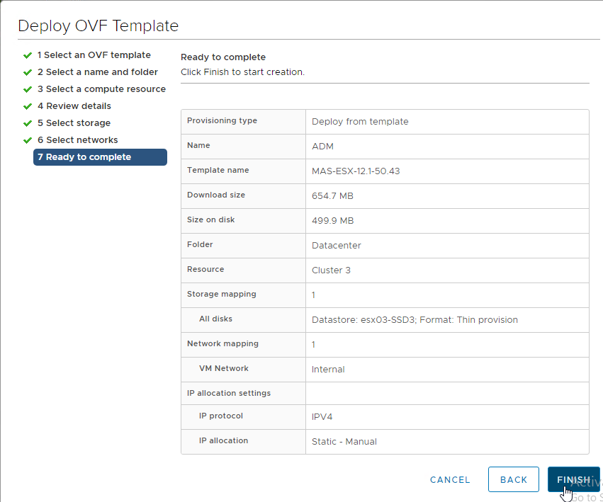
- Before powering on the appliance, you can review its specs. Right-click the virtual machine, and click Edit Settings.
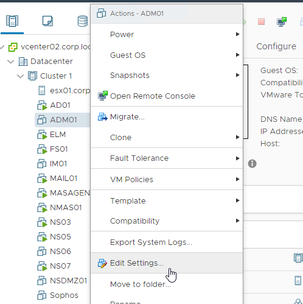
- Review the specs. Citrix Docs VMware ESXi Hardware Requirements has recommended specs.
- The OVF defaults to 8 vCPU and 32 GB of RAM.
- You can add a second hard disk at this time.
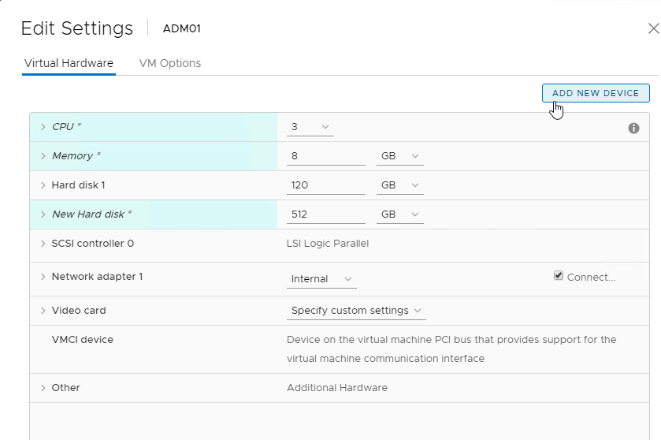
- Citrix Docs Attach an additional disk to Citrix ADM says that an additional disk must be added before initial deployment.
- Use the ADM storage calculator to determine the recommended size of the disk. Ask your Citrix Partner for the tool.
- The new disk must be larger than 120 GB.
- In ADM 12.1, the new disk can be larger than 2 TB.
- In ADM 12.1, the new disk can be grown later, and
**/mps/DiskPartitionTool.py**can resize the partition, but only up to 2 TB. If you need more than 2 TB, the initial disk should be larger than 2 TB.
- Power on the Virtual Machine.
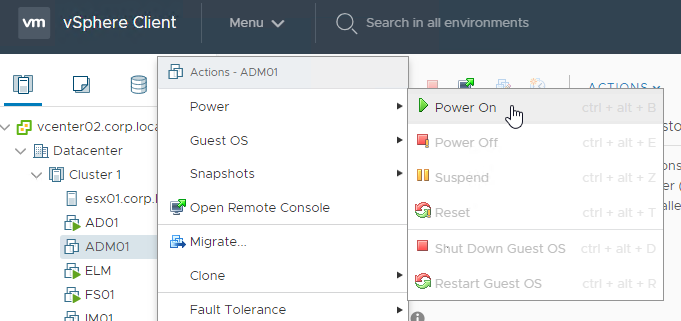
Appliance IP Address Configuration
- Open the console of the virtual machine.
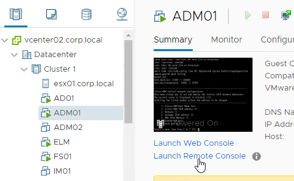
- Configure IP address information.
- Enter 7 when done.
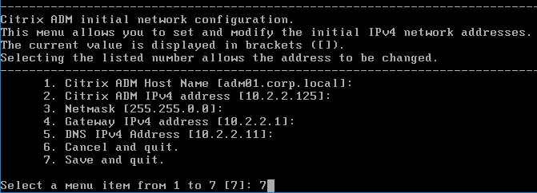
Second Disk
- SSH to the appliance and login as nsrecover/nsroot.
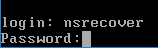
- Enter
**/mps/DiskPartitionTool.py**- The Disk Partition Tool is documented at Attach an additional disk to Citrix ADM at Citrix Docs.
- Enter
**info**to see that there are no existing partitions on the second disk.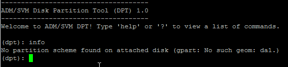
- Enter
**create**to create partitions on the second disk. A reboot is required.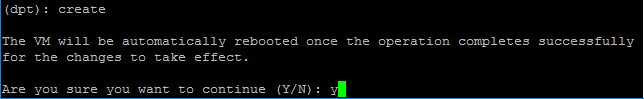
- During the reboot, the database is moved to the second disk.
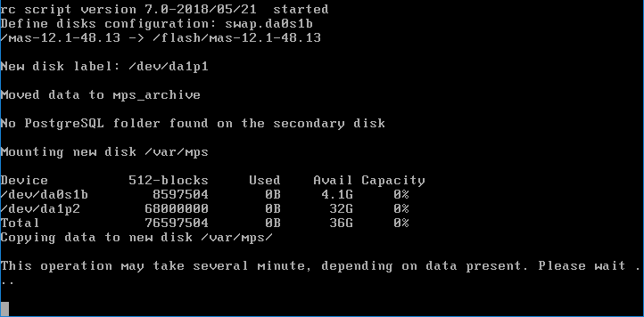
- After the reboot, the Disk Partition Tool info command shows the partition on the second disk.
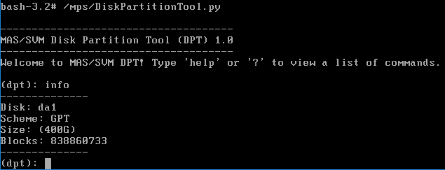
- If you need to increase the size of the disk, reboot the ADM appliance so it detects the larger size. Then use the Disk Partition Tool
**resize**command.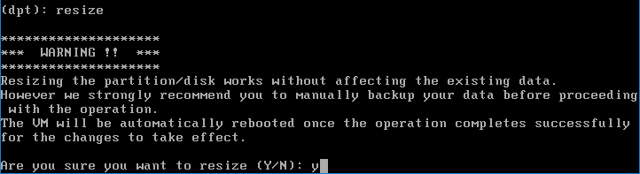
Deployment Modes
HA Pair in the Main Datacenter
First Node:
- SSH to the first node and login as nsrecover/nsroot.
- Enter deployment_type.py.
- Enter 1 for Citrix ADM Server.
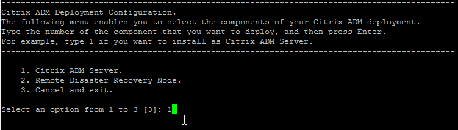
- Enter no when prompted for Citrix ADM Standalone deployment.
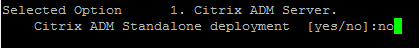
- For the First Server Node prompt, enter yes.
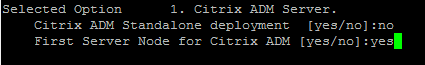
- Enter yes to Restart the system.
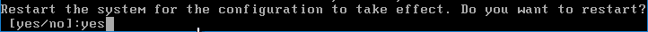
Second Node:
- Import another ADM appliance to the same subnet, and configure an IP address.
- Latency to the HA node must not exceed 10 ms.
- The HA nodes must be on the same subnet.
- If you added a second disk to the first ADM appliance, then you must add the same size second disk to the second ADM appliance.
- Configure the new nodes' IP address.
- SSH to the second appliance, login as nsrecover/nsroot, and run the Disk Partition tool.
- SSH to the second appliance, login as nsrecover/nsroot, and run deployment_type.py.
- Enter 1 for Citrix ADM Server.
- Enter no when prompted for Citrix ADM Standalone deployment.
- Enter no when prompted is this is First Server Node.
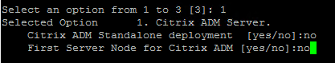
- Enter the IP address of the first MAS node.
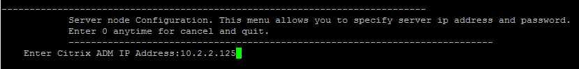
- Enter the nsroot password of the first node. The default password is nsroot.
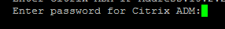
- Enter a new Floating IP address.
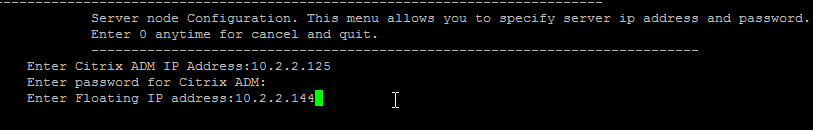
- Enter yes to restart the system.
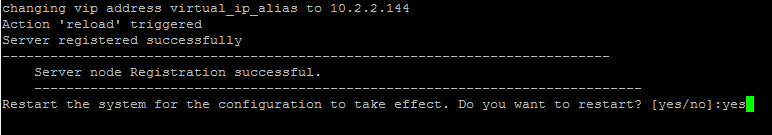
Deploy HA Configuration:
- Point your browser to the first appliance's IP address, and login as nsroot/nsroot.
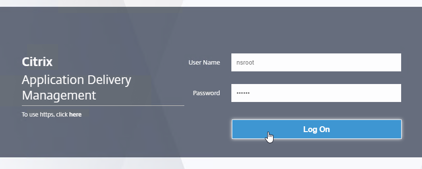
- If you see Customer User Experience Improvement Program, click Enable, or click Skip.
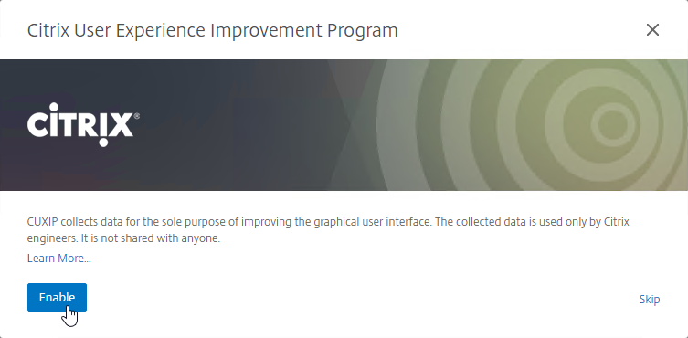
- The System > Deployment page is displayed. In the top right, click Deploy.
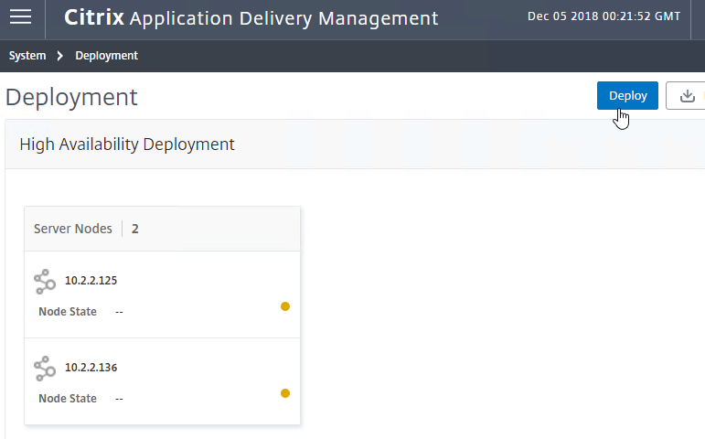
- Click Yes to reboot.
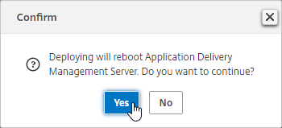
- After deployment, you can now use the Floating IP to manage the appliance.
- After the reboot, login again. You'll see a Wizard to add instances.
After the add instance wizard is complete, you can manage High Availability.
- System > Deployment lets you see the HA nodes.
- You can Force Failover from here. Note: HA failover only occurs after three minutes of no heartbeats.
- On the top right is a HA Settings button that lets you change the Floating IP.
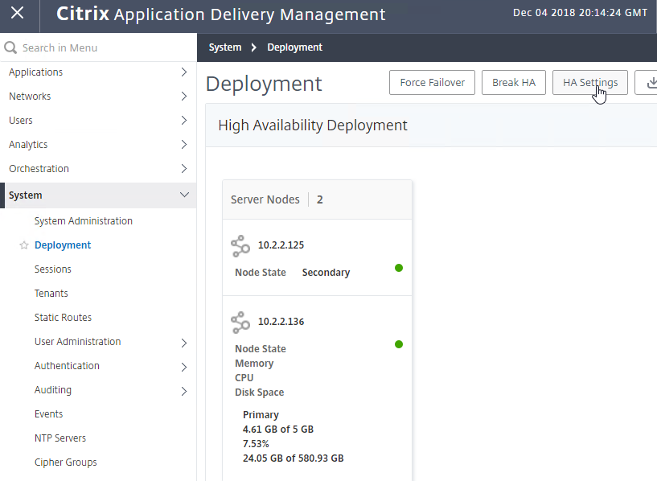
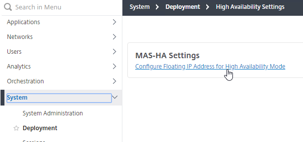
DR Node
Requirements for the DR node:
- The main datacenter must have an HA pair of ADM appliances. Standalone in the main datacenter is not supported.
- Latency from the main datacenter HA pair to the DR node must not exceed 200 ms.
To configure a DR node:
- Import another ADM appliance into a remote datacenter, and configure an IP address.
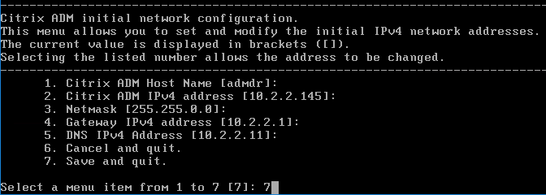
- If you added a second disk to the main datacenter ADM appliances, then you must add the same size second disk to the DR ADM appliance.
- After configuring the new nodes' IP address, SSH to the DR appliance and login as nsrecover/nsroot.
- Enter deployment_type.py.
- Enter 2 for Remote Disaster Recovery Node.
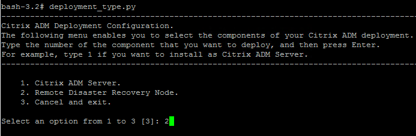
- Enter the Floating IP address of the HA pair in the main datacenter.
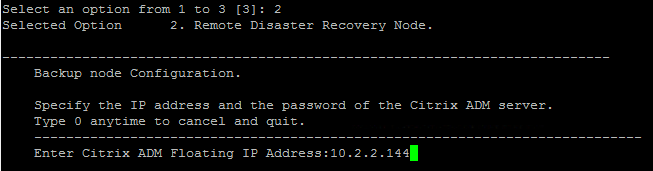
- Enter the nsroot password, which is nsroot by default.
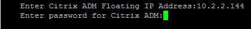
- The DR node registers with the MAS HA Pair.
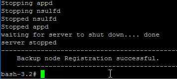
- Point your browser to the Floating IP Address and login.
- Go to System > System Administration.
- On the right, in the right column, click Disaster Recovery Settings.
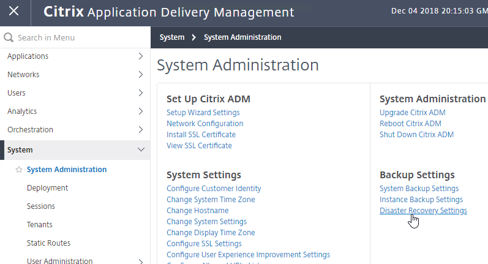
- The Registered Recovery Node should already be filled in.
- Check the box next to Enable Disaster Recovery, and click Apply Settings.
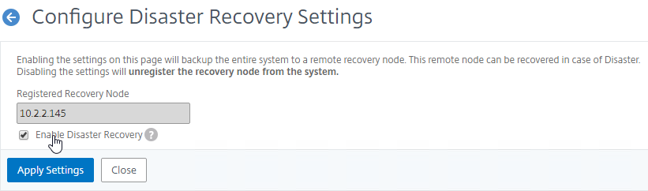
- Click Yes to enable DR.
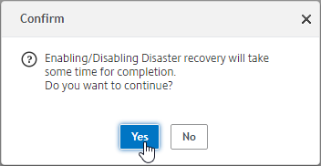
- A System Backup is performed and replicated to the DR appliance.
- Disaster Recovery is not automatic. See the manual DR procedure at at Citrix Docs.
**/mps/scripts/pgsql/pgsql_restore_remote_backup.sh**
ADM Agents
The virtual appliance for ADM Agent is different than the normal ADM appliance.
- Download the ADM Agent from the main ADM download page. Scroll down the page to find the ADM Agent images. Note: The ADM Agent has a newer build number than the ADM image due to a security vulnerability.
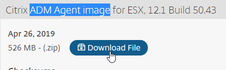
- Extract the downloaded .zip file.
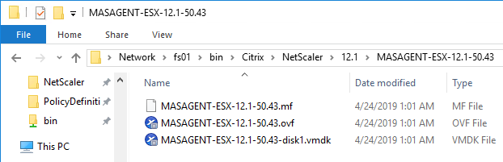
- Import the .ovf to vSphere.
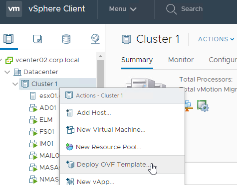
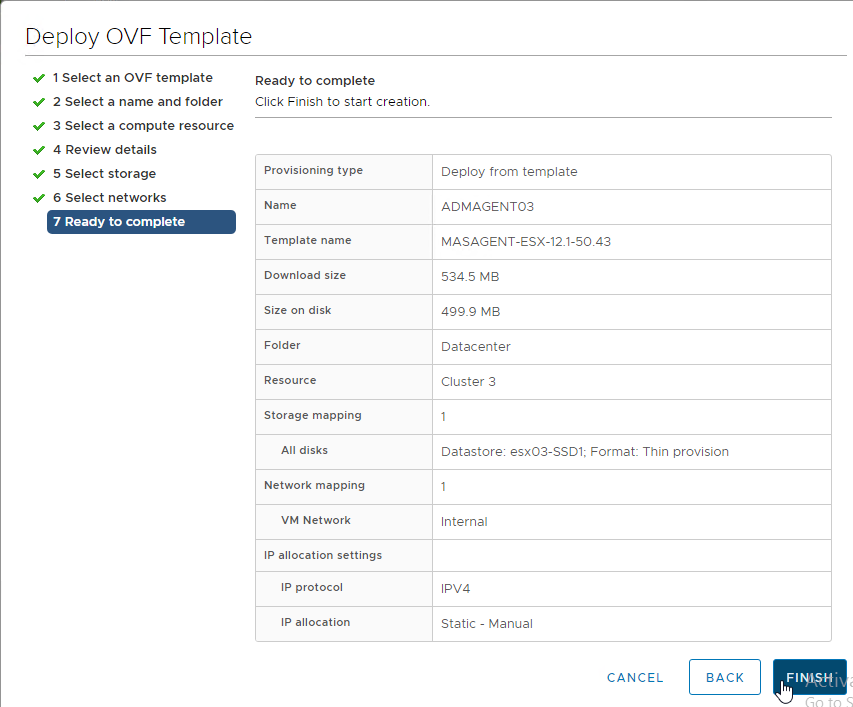
- Edit the settings of the virtual machine to see the allocated CPU and Memory.
- Power on the ADM Agent virtual machine.
- At the virtual machine's console, configure an IP address.
- Login as nsrecover/nsroot.
- Run
**/mps/register_agent_onprem.py** - Enter the floating IP address of the main ADM HA Pair. Enter nsroot credentials.
- The Agent will be registered and services restarted.
- Login to the ADM Floating IP.
- Go to Networks > Agents.
- On the right, select the ADM Agent, and then click Attach Site.
- In the Site drop-down, if you don't see your site, then you can click the Add button to create a new site.
- Enter a name, enter a search location, and click Get Location to get the coordinates. Click Create when done.
- Click Save to attach the site.
- For HA, import two ADM Agents into the same Site.
ADM Appliance Maintenance
- Shutdown or Reboot - From CTX220000 How to reboot or shutdown NetScaler MAS using CLI: when using the ADM CLI, do not use the reboot command since it will cause data corruption. Instead, run shutdown -r now.
- Static Route - If you need to add a static route to Citrix ADM, then see CTX223282 How to Add a Static Route on NetScaler MAS.
- ADM Database Cleanup Tool - Run
**/mps/mas_recovery/mas_recovery.py**. For details, see Recover inaccessible Citrix ADM servers at Citrix Docs.
Add Instances
Citrix ADM must discover Citrix ADC instances before they can be managed. Citrix Docs How Citix ADM discovers instances.
- Once you’ve built all of the nodes, point your browser to the Citrix ADM Floating IP address, and login as nsroot/nsroot.

- Deployment should already be done, so click Next.
- On the Add New Instances page, click Add Instance near the top right.
- Enter the NSIP address of a Citrix ADC appliance.
- CItrix ADM supports up to 400 ms latency to the instances.
- Click Edit next to ns_nsroot_profile.
- Check the box next to Change Password.
- Type in the nsroot password, and then scroll down.
- The Citrix ADC Profile defaults to using https for instance communication. You can change it by unchecking Use global settings for Citrix ADC communication.
- Click OK.
- Select the Site for the instance. You can click Add to create a Site.
- For remote sites, you can optionally choose a ADM Agent.
- Then click OK to add the instance.
- A progress window will appear. Click Close when complete.
- You can add more instances, or just click Next.
- In the Customer Identity page, make your choice, then click Next or Skip.
- In the Done page, click Finish.
To add more instances later:
- Click the top left hamburger icon.
- Go to Networks > Instances > Citrix ADC.
- On the right, select a tab (e.g. MPX), and then click Add.
- To edit, or create new Admin Profiles, go to Networks > Instances > Citrix ADC, and on the right is a Profiles button.
- ADM 12.1 build 49 and newer lets you assign Tags to instances. See How to create tags and assign to instances at Citrix Docs.
- You can then search instances based on the Tags.
Citrix ADC SDX
- At Networks > Instances > Citrix ADC, on the SDX tab, you can click Add to discover a SDX appliance, and all VPXs on that SDX appliance. You don't have to discover the VPXs separately.
- In the Add Citrix ADC SDX page, click the Edit button next to the Profile Name drop-down to edit nssdx_default_profile. Or you can click the Add button to create a new SDX Profile. Note: SDX profiles are different than VPX profiles.
- Enter the credentials for the SDX SVM Management Service.
- For Citrix ADC Profile, select an admin profile that has nsroot credentials for the VPX instances. After the VPXs are discovered, ADM uses the ADC Profile to login to each VPX. If you don't have a VPX Admin Profile in your drop-down list, click the Add button. Note: You can only select one ADC Profile. If each VPX instance has different nsroot credentials, you can fix it after SDX discovery has been performed. The ADC Profile is different than the SDX Profile.
- In the Create Citrix ADC Profile page, enter the nsroot credentials for the VPX instances, and then scroll down.
- Enter a new SNMP Security Name or Community String.
- Then click Create.
- Back in the Configure ADC SDX Profile page, enter a new Community string for the SDX SVM. This appears to be SNMP v2 only.
- You can uncheck the box for Use global settings for SDX communication, and change the protocol.
- Click OK when done.
- Back in the Add Citrix ADC SDX page, select a Site, and optionally an Agent.
- Click OK to start discovery.
- After discovery is complete, switch to the VPX tab. You should automatically see the VPX instances.
- To specify the nsroot credentials for a VPX, right-click the VPX, and click Edit.
- In the Modify Citrix ADC VPX page, either select an existing Profile Name, or click the Add button to create a new one. Click OK when done. It should start rediscovery automatically.
- After fixing the nsroot credentials, right-click the VPX instance, and click Configure SNMP. ADM will configure the VPX to send SNMP Traps to ADM.
Instance management
- REST API proxy - Citrix ADM can function as a REST API proxy server for its managed instances. Instead of sending API requests directly to the managed instances, REST API clients can send the API requests to Citrix ADM. See Citrix CTX228449 NetScaler MAS as an API Proxy Server
- Citrix Application Delivery Management PowerShell Module by Kenny Baldwin provides a Invoke-ADMNitro cmdlet to send Nitro commands to instances through ADM. :idea:
- Citrix ADC VPX Check-In/Check-Out Licensing - You can allocate VPX licenses to Citrix ADC instances on demand from Citrix ADM. The Licenses are stored and managed by Citrix ADM, which has a licensing framework that provides scalable and automated license provisioning. A Citrix ADC VPX instance can check out the license from the Citrix ADM when a Citrix ADC VPX instance is provisioned, or check back in its license to Citrix ADM when an instance is removed or destroyed. See Citrix CTX228451 NetScaler VPX Check-In/Check-Out Licensing with NMAS
Licenses
Virtual Server License Packs
Without licenses, you can enable analytics features on only 30 Virtual Servers. You can install additional licenses in 100 Virtual Server packs. More info at Licensing at Citrix Docs.
- On the left, go to Networks > Licenses.
- On the right, notice the Host ID.
- At mycitrix.com, allocate your Citrix ADM licenses to this Host ID.
- Then use the Browse button to upload the allocated license file.
- Click Finish after uploading the license file to apply it.
- The License Expiry Information section shows you the number of installed licenses and when they expire.
- You can use the Notification Settings section to email you when licenses are almost fully consumed or about to expire.
- If you don't have an Email server setup yet, click the Add button to create one.
Allocate licenses to Virtual Servers
You can manually unassign an automatically-allocated ADM Virtual Server license and reassign it to a different Virtual Server.
- Go to Networks> Licenses > System Licenses to see the number of currently installed licenses, and the number of managed virtual servers.
- By default, Auto-select Virtual Servers is enabled. If you disable this setting, then the Click to select button appears.
- Click the Click to select button.
- The top right shows you the number of licensed Virtual Servers.
- In the left, select the type of Virtual Server you want to unlicense or license.
- On the right, the License Type column indicates if the Virtual Server is licensed or not.
- Select a Virtual Server you want to license, and then click the Apply Basic License button. Note: you might have to unlicense a different Virtual Server first.
- Click Close when done.
Enable AppFlow / Insight / Analytics
- Go to Networks > Instances > Citrix ADC.
- On the right, switch to one of the instance type tabs (e.g. VPX).
- Select an instance, open the Select Action menu, and click Configure Analytics.
- At the top of the page are boxes you can check.
- Down the page, in the Application List section, with Load Balancing selected in the View list, select your StoreFront load balancer, and then click Enable AppFlow. If you don't see your Virtual Server in this list, then you first need to assign a Virtual Server License.
- In the Enable AppFlow window, do the following:
- In the larger Expression box, type in true.
- For newer ADC appliances, change the Transport Mode selection to Logstream instead of IPFIX. Notice the firewall requirement for TCP port 5557.
- Select Web Insight.
- If App Firewall is enabled on the vServer, then also select Security Insight.
- Client Side Measurement injects JavaScript in HTTP responses to measure page load times and can sometimes cause problems in Receiver / Workspace app.
- Click OK.
- Use the View drop-down to select Citrix Gateway.
- Right-click a Citrix Gateway Virtual Server, and click Enable AppFlow.
- In the Enable AppFlow window, do the following:
- In the Select Expression drop-down, select true.
- For newer ADC appliances, change the Transport Mode to Logstream. Notice the firewall warning.
- Select both ICA and HTTP. The HTTP option is for Gateway Insight.
- The TCP option is for the second appliance in double-hop ICA. If you need double-hop, then you’ll also need to run
set appflow param -connectionChaining ENABLEDon both appliances. See Enabling Data Collection for NetScaler Gateway Appliances Deployed in Double-Hop Mode at Citrix Docs for more information. - The AppFlow processing impact on the ADC is much reduced if you run VDA 7.16 or newer (including VDA 1903), Workspace app or Receiver 4.10 and newer, and ADC 12.0 build 57.24 or newer (including NetScaler 12.1). VDA 7.15 (LTSR) does not include the new AppFlow NSAP functionality. Details at Citrix Blog Post HDX Insight 2.0.
- Click OK.
- Login to the Citrix ADC (not ADM), and go to System > Settings.
- On the right, click Configure Modes.
-
If you are using LogStream, then make sure ULFD is checked. Click OK.
-
On the right, click Change Global System Settings.
-
Scroll down to ICA port(s) and enter 1494 and 2598. Click OK. (Source = Citrix Discussions)
-
On the right, click Change HTTP Parameters.
-
At the top, add 80 and 443 to the Http Ports list. Click OK. (Source = Citrix Discussions)
-
By default, with AppFlow enabled, if a ADC High Availability pair fails over, all Citrix connections will drop, and users must reconnect manually. NetScaler 11.1 build 49 and newer have a feature to replicate Session Reliability state between both HA nodes.
- From Session Reliability on NetScaler High Availability Pair at Citrix Docs: Enabling this feature will result in increased bandwidth consumption, which is due to ICA compression being turned off by the feature, and the extra traffic between the primary and secondary nodes to keep them in sync.
- On a NetScaler 11.1 build 49 and newer ADC appliance, go to System > Settings.
- On the right, in the Settings section, click Change ICA Parameters.
- Check the box next to Session Reliability on HA Failover, and click OK.
- In a NetScaler 12 or newer instance, at System > AppFlow > Collectors, you can see if the Collector (ADM) is up or not. However, ADC uses SNIP to verify connectivity, but AppFlow is sent using NSIP, so being DOWN doesn't necessarily mean that AppFlow isn't working. Citrix CTX227438 After NetScaler Upgrade to Release 12.0 State of AppFlow Collector Shows as DOWN.
- On the ADM appliance, AppFlow for ICA (HDX Insight) information can be viewed MAS under the Analytics > HDX Insight node.
Citrix Blog Post - NetScaler Insight Center – Tips, Troubleshooting and Upgrade
Enable Syslog on Instance
ADM can configure ADC instances to send Syslog to ADM. Note: this will increase disk space consumption on the ADM appliances.
- Go to Networks > Instances > Citrix ADC. On the right, select a tab..
- On the right, select an instance, open the Select Action drop-down, and click Configure Syslog.
- Uncheck All and check the other boxes. You probably don't want Debug or None. Click OK.
ADM nsroot Password
Changing the nsroot password also changes the nsrecover password.
- In ADM , go to System > User Administration > Users.
- On the right, select the nsroot account, and click Edit.
- Check the box next to Change Password and enter a new password.
- You can also specify a session timeout by checking the box next to Configure Session Timeout.
- Click OK.
Management Certificate
The certificate to upload must already be in PEM format. If you have a .pfx, you must first convert it to PEM (separate certificate and key files). You can use a ADC to convert the .pfx, and then download the converted certificate from the appliance.
- Go to System > System Administration.
- On the right, in the Set Up Citrix ADM section, click Install SSL Certificate.
- Click Choose File to browse to the PEM format certificate and key files. If the keyfile is encrypted, enter the password. Click OK.
- Click Yes to reboot the system.
System Configuration
- Go to System > System Administration.
- On the right, modify settings (e.g. Change System Time Zone) as desired.
- Click Change System Settings.
- Check the box next to Enable Session Timeout, and specify a value.
- By default, at Networks > Instances > Citrix ADC , if you click a blue IP address link, it opens the instance in a new web page, and logs in automatically using the nsroot credentials. If you want to force ADM users to login using non-nsroot credentials, in Modify System Settings, check the bottom box for Prompt Credentials for Instance Login.
- Click OK when done.
- Configure SSL Settings lets you disable TLS 1 and TLS 1.1.
- Click the Protocol Settings section in the Edit Settings section on the right side of the screen.
- On the left, uncheck TLSv1 and TLSv1.1. Then click OK and Close.
- A restart is required.
Message of the Day
In ADM 12.1 build 50 and newer, you can configure a Message of the day.
- In ADM, on the left, go to System > System Administration.
- On the right, in the System Settings section, click Configure message of the day.
- Enter a message and click OK.
- When you login to ADM, you'll be shown the message.
Prune Settings
- At System > System Administration, on the left are Prune Settings.
- System Prune Settings ...
- ...defaults to deleting System Events, Audit Logs, and Task Logs after 15 days. System events are generated by the MAS appliance, which is different than Instance events (SNMP traps) that are generated by ADC appliances.
- MAS can initiate a purge automatically as the database starts to get full.
- If you click the pencil next to the purge threshold value, you can configure an alarm for when the database gets full.
- To see the current database disk usage, go to System > Statistics.
- Instance Events prune Settings controls when instance SNMP traps are pruned, which defaults to 40 days.
- If you are sending Syslog from instances to MAS, Instance Syslog Purge Settings controls when the log entries are purged.
Backup Settings
- In the right column, under Backup Settings, are additional settings.
- System Backup Settings defines how many MAS backups you want to keep.
- Instance Backup Settings lets you configure how often the instances are backed up.
- You probably want to increase the number of instance backups, or decrease the backup interval.
- There is an option to perform a backup whenever the ADC configuration is saved.
- The Enable External Transfer checkbox lets you transfer the backups to an external system so it can be backed up by your backup tool.
Analytics Settings
- There are more settings at Analytics > Settings.
- ICA Session Timeout can be configured by clicking the link.
- If ADM doesn't receive AppFlow records for a session, it will consider that session has got terminated in ADC and stops monitoring that session further. The time for which ADM needs to wait before considering a session terminated is ICA session timeout. This is configurable in ADM, by default it is set to 15 minutes. (source = Citrix Discussions)
- You can configure how the App Score (Application Dashboard) is calculated.
- Analytics > Settings > Data Persistence lets you configure how long Analytics data is retained. Adjusting these values could dramatically increase disk space consumption. See CTX224238 How Do I Increase Granularity of Data Points Stored on NetScaler MAS Analytics?.
- To see the current database disk usage, go to System > Statistics.
NTP Servers
- On the left, click System > NTP Servers.
- On the right, click Add.
- Enter an NTP server, and click Create.
- After adding NTP servers, click the NTP Synchronization button.
- Check the box next to Enable NTP Synchronization, and click OK.
- Click Yes to restart.
Syslog
This is for log entries generated by ADM, and not for log entries generated by instances.
- Go to System > Auditing > Syslog Servers.
- On the right, click Add.
- Enter the syslog server IP address, and select Log Levels. Click Create.
- You can click Syslog Parameters to change the timezone and date format.
Email Notification Server
- Go to System > Notifications > Email.
- On the right, on the Email Servers tab, click Add.
- Enter the SMTP server address, and click Create.
- On the right, switch to the Email Distribution List tab, and click Add.
- Enter an address for a destination distribution list, and click Create.
- In ADM 12.1 build 49 and newer, you can highlight a Distribution List and click the Test button.
- On the left, click System > Notifications.
- On the right, click Change Notification Settings.
- Move notification categories (e.g. UserLogin) to the right.
- Check the box next to Send Email. Select a notification distribution list. Then click OK.
Authentication
- Go to System > Authentication > LDAP.
- On the right, click Add.
- This is configured identically to ADC.
- Enter a Load Balancing VIP for LDAP.
- Change the Security Type to SSL, and Port to 636. Scroll down.
- Enter the Base DN in LDAP format.
- Enter the bind account credentials.
- Check the box for Enable Change Password.
- Click Retrieve Attributes, and scroll down.
- For Server Logon Attribute, select sAMAccountName.
- For Group Attribute, select memberOf.
- For Sub Attribute Name, select cn.
- To prevent unauthorized users from logging in, configure a Search Filter. Scroll down.
- If desired, configure Nested Group Extraction.
- Click Create.
- On the left, go to System > User Administration > Groups.
- On the right, click Add.
- Enter the case sensitive name of your Citrix ADC Admins AD group.
- Move the admin Permission to the right.
- The Configure User Session Timeout checkbox lets you configure a session timeout.
- Click Next.
- On the Authorization Settings page, if you are delegating limited permissions, you can uncheck these boxes and delegate specific entities.
- All DNS Domain Names (GSLB) is an option for Stylebooks in ADM 12.1 build 49 and newer.
- Click Create Group.
- In the Assign Users page, click Finish. Group membership comes from LDAP, so there's no need to add local users.
- On the left, go to System > User Administration.
- On the right, click User Lockout Configuration.
- If desired, check the box next to Enable User Lockout, and configure the maximum logon attempts. Click OK.
- On the left, go to System > Authentication.
- On the right, click Authentication Configuration.
- Change the Server Type to EXTERNAL, and click Insert.
- Select the LDAP server you created, and click OK.
- Make sure Enable fallback local authentication is checked, and click OK.
Analytics Thresholds
- Go to Analytics > Settings > Thresholds.
- On the right, click Add.
- Enter a name.
- Use the Traffic Type drop-down to select HDX, WEB, SECURITY, or APPANALYTICS.
- Use the Entity drop-down to select a category of alerts. What you choose here determines what’s available as Metrics when you click Add Rule.
- With HDX as the Traffic Type, to add multiple rules for multiple Entity types, simply change the Entity drop-down before adding a new rule.
- If the Traffic Type is HDX, and the Entity drop-down is set to Users, on the bottom in the Configure Geo Details section, you can restrict the rule so it only fires for users for a specific geographical location.
- In the Notification Settings section, check the box to Enable Treshold.
- Check the box to Notify through Email, and select an existing Email Distribution List.
- Click Create.
Private IP Blocks
You can define Geo locations for internal subnets.
- Go to Analytics > Settings > IP Blocks.
- On the right, click Add.
- In the Create IP Blocks page:
- Enter a name for the subnet.
- Enter the starting and ending IP address.
- Select a Geo Location (Country, Region, City). As you change the fields, the coordinates are automatically filled in.
- Click Create.
Instance Email Alerts (SNMP Traps)
You can receive email alerts whenever a ADC appliance sends a critical SNMP trap.
- On the left, go to Networks > Events > Rules.
- On the right, click Add.
- Give the rule a name.
- Move Severity filters (e.g. Major, Critical) to the right by clicking the plus icon next to each Severity.
- While scrolling down, you can configure additional alert filters. Leaving them blank will alert you for all categories, objects, and instances.
- On the bottom of the page, in the Event Rule Actions section, click Add Action.
- In the Add Event Action page:
- Select an Action Type (e.g. Send e-mail Action).
- Select the recipients (or click the Add button to add recipients).
- Optionally, enter a Subject and/or Message.
- In ADM 12.1 build 49 and newer, if you enter a Subject, you can check Prefix severity, category, and failure object information to the custom email subject.
- Emails can be repeated by selecting Repeat Email Notification until the event is cleared.
- Click OK.
- Then click Create.
- See the Event Management section at All how to articles at Citrix Docs.
Events Digest
ADM can email you a daily digest (PDF format) of system and instance events
To enable the daily digest:
- Go to System > Notifications.
- On the right, click Configure Event Digest Settings.
- Uncheck the box next to Disable Event Digest.
- Configure the other settings as desired, and click OK.
Director Integration
Integrating Citrix ADM with Director adds Network tabs to Director's Trends and Session Details views. Citrix Blog Post Configure Director with Netscaler Management & Analytics System (MAS)
Requirements:
- Citrix Virtual Apps and Desktops (CVAD) must be licensed for Platinum Edition. This is only required for the Director integration. Without Platinum, you can still access the HDX Insight data by going visiting the Citrix ADM website.
- Director must be 7.11 or newer for Citrix ADM support.
To link Citrix Director with Citrix ADM:
- On the Director server, run C:\inetpub\wwwroot\Director\tools\DirectorConfig.exe /confignetscaler.
- Enter the Citrix ADM nsroot credentials.
- If HTTPS Connection (recommended), the Citrix ADM certificate must be valid and trusted by both the Director Server and the Director user's browser.
- Enter 1 for Citrix ADM (aka MAS).
- Do this on both Director servers.
Use Citrix ADM
Networks
Everything under the Networks node is free.
At Networks > Instances, select an instance, and view its Dashboard.
ADM 12.1 adds a series of tabs to the Instance Dashboard.
Backups are available by selecting an instance, and clicking Backup/Restore.
Infrastructure Analytics. The ADM Cloud Service has an Infrastructure Analytics node under the Networks node. For details, see Infrastructure Analytics at Citrix Docs.
- On the right, if you click the gear icon above the table, then the right panel changes to the Settings Panel instead of the Summary Panel. In the right panel, you can then switch to the tab named Score Thresholds to adjust how Infrastructure Analytics scores instance CPU, Memory, Disk, etc.
- You can click the Circle Pack button to change to the Circle Pack view.
Networks > Network Reporting lets you create Dashboards where you can view Instance performance data.
Networks > Network Reporting > Thresholds lets you create thresholds when counters cross a threshold. For example, you might want a notification when Throughput gets close to the licensed limit.
Configuration Record and Play
Use ADM to record a configuration change on one instance, and push to other instances.
- Go to Networks > Configuration Jobs.
- On the right, click Create Job.
- Change the Configuration Source drop-down to Record and Play.
- Change the Source Instance drop-down to the instance you want to record.
- Click Record.
- ADM opens the instance GUI. Make changes as desired.
- When done, go back to ADC, and click Stop.
- ADC retrieves the changed config.
- On the left, you'll see the changed commands. Drag them to the right.
- On the right, you can change instance-specific values to variables by simply highlighting the values. This allows you to change the values for each instance you push this config to.
- Proceed through the rest of the Configuration Job wizard like normal. You'll select instances, specify variable values for each instance, and schedule the job.
Dave Brett Automating Your Netscaler 11.1 Vserver Config Using Netscaler Management and Analytics System uses a Configuration Job to deploy StoreFront load balancing configuration to an instance.
Analytics and Applications
This functionality requires Virtual Server licenses, which can come from your built-in 30 free licenses.
The AppFlow Analysis tools (e.g. HDX Insight) are located under the Analytics node. See Viewing HDX Insight Reports and Metrics at Citrix Docs.
Applications > Dashboard automatically includes all licensed Virtual Servers in the Others section. On the top middle, click Define Custom App to group Virtual Servers together into an application. The grouped Virtual Servers are removed from the Others list.
Applications > Configurations > Stylebooks lets you use Stylebooks to create new ADC configurations.
There are built-in Stylebooks for Exchange, SharePoint, Oracle, ADFS, etc. Or you can create your own Stylebook and use it to create ADC configurations. For details, see Stylebooks at Citrix Docs.
The Applications Node has quite a bit of functionality. See Application Analytics and Management at Citrix Docs for details.
Link:
- Citrix ADM How-to Articles at Citrix Docs.
HDX Insight
HDX Insight Dashboard displays ICA session details including the following:
- WAN Latency
- DC Latency
- RTT (round trip time)
- Retransmits
- Application Launch Duration
- Client Type/Version
- Bandwidth
- Licenses in use
Citrix CTX215130 HDX Insight Diagnostics and Troubleshooting Guide contains the following contents:
- Introduction
- Prerequisites for Configuring HDX Insight
- Troubleshooting
- Issues Related to ICA parsing
- Error Counter details
- Checklist before Contacting Citrix Technical Support
- Information to collect before Contacting Citrix Technical support
- Known Issues
Gateway Insight
In the Analytics node is Gateway Insight.
This feature displays the following details:
- Gateway connection failures due to failed EPA scans, failed authentication, failed SSON, or failed application launches.
- Bandwidth and Bytes Consumed for ICA and other applications accessed through Gateway.
- # of users
- Session Modes (clientless, VPN, ICA)
- Client Operating Systems
- Client Browsers
More details at Gateway Insight at Citrix Docs.
Security Insight
The Security Insight dashboard uses data from Application Firewall to display Threat Index (criticality of attack), Safety Index (how securely ADC is configured), and Actionable Information. More info at Security Insight at Citrix Docs.
Troubleshooting
Citrix CTX215130 HDX Insight Diagnostics and Troubleshooting Guide: Syslog messages; Error counters; Troubleshooting checklist, Logs
Citrix CTX224502 NetScaler MAS Troubleshooting Guide
Upgrade Citrix ADM
- For MAS 12.0 build 56 and older, you must upgrade to MAS 12.0 build 57.24 before you can upgrade to ADM 12.1. (Source = Before you upgrade at Citrix Docs)
- Download the latest Citrix Application Delivery Management (NetScaler MAS) Upgrade Package. You want the ADM Upgrade Package, not a ADM image. It's around halfway down the page.
- Login to Citrix ADM Floating IP or Active Node. Upgrading the Active Node automatically upgrades the Passive Node.
- Go to System > Deployment and make sure both nodes are online and replicating.
- Go to System > System Administration.
- On the right, in the right pane, click Upgrade Citrix ADM.
- Browse to the build-mas-12.1...tgz Upgrade Package, and click OK. The file name starts with build-mas-12.1.
- Click Yes to reboot the appliance.
- After it reboots, login.
- If you upgraded from a version older than 12.1 build 50 to a version 12.1 build 50 or newer, you might be prompted to Configure Customer Identity. Make your choice.
- You can return to the Configure Customer Identity screen by clicking the cloud icon next to your username at the top right of the page.
- The new firmware version will be displayed by clicking your username in the top right corner.
Upgrade Disaster Recovery Node
After you upgrade the HA pair in the primary datacenter, you can upgrade the DR node.
- Use WinSCP or similar to connect to the DR node using the nsrecover credentials.
- On the ADM DR node, navigate to /var/mps/mps_images.
- Create a new Directory with the same name as the 12.1 build number. Then double-click the new directory to open it.
- Upload the file named build-mas-12.1-##.##.tgz to the version-specific directory. This is the regular ADM upgrade file with a name starting with build-mas-12.1. It's not the Agent upgrade file.
- SSH (Putty) to the DR node and login as nsrecover.
-
Enter the following. Replace the # with the version number.
-
Then enter the following. The appliance will reboot automatically.
8. After the reboot, the file /var/mps/log/install_state... 9. ...shows you the installed version.
Upgrade ADM Agents
After you upgrade the ADM HA pair in the primary datacenter, and after you upgrade the DR node, you can then upgrade the ADM Agents.
- From the ADM 12.1 download page, at the bottom of the page, download the ADM Agent Upgrade Package. This Agent Upgrade file is different than the regular ADM upgrade file. And it is different than the files to deploy a new Agent. Find it at the bottom of the downloads page. Note that Citrix updated the ADM Agent firmware to build 50.33 or higher to resolve a security vulnerability.
- Use WinSCP or similar to connect to the ADM Agent using the nsrecover credentials.
- On the ADM Agent, navigate to /var/mps/mps_images.
- Create a new Directory with the same name as the 12.1 build number. Then double-click the new directory to open it.
- Upload the file named build-masagent-12.1-##.##.tgz to the version-specific directory. This is the ADM Agent upgrade file, and not the regular ADM upgrade file.
- SSH (Putty) to the ADM Agent and login as nsrecover.
-
Enter the following. Replace the # with the version number.
-
Then enter the following. The appliance will reboot automatically.
9. After the reboot, the file /var/mps/log/install_state... 10. ...shows you the installed version. 11. Repeat for any additional ADM Agents. 12. If you login to ADM and go to Networks > Agents, you should see the new Version. It will take several minutes for the version number to update.